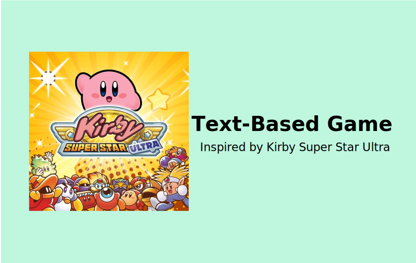

This conversatioal story game can be deployed to the Google Assistant or a website.
At the end, users have to make a critical choice which is logged by hosting a NodeJS website and PostgreSQL database on Heroku.
2 / 3
This Natural Disaster Relief App allows users to find critical information as well as provide reliable and dependable resources that are updated often.
3 / 3

This "Kirby Super Star Ultra" inspried text-based game was created in C++. It lets users fight enemies and complete missions.